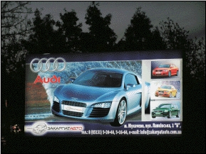

|
Біг-борди
Сіті-лайти
Реклама на мостах
Нестандартна реклама
Перспективні напрямки
На головну
|
Розділ "Зовнішня реклама"
Рекламне агенство "КРІС" є одним із основних операторів зовнішньої реклами в Закарпатській області.
Власна мережа рекламоносіїв типу:
Біг-борди - кількість складає 180
біг-бордів, розміщених в таких містах: Ужгород, Мукачево, Свалява, Чоп, Берегово, Іршава, а також КПП на державних кордонах України з Угорщиною і Словаччиною. |
|
|
Сіті-лайти
- в центральній частині міста Мукачево - 16 конструкцій, в центральній частині міста Ужгород - 2 конструкцій, на автобусних зупинках (див. розділ "Сіті-лайти"). |
|
Бек-лайти - рекламна конструкція розміром 3х6м (внутрішня підсвітка) в містах Мукачево та Ужгород. |
|
|
 |
Призматрони - рекламна конструкція розміром 3х6м. (тривіжн) в центрі міста Ужгород. |
|
|
Брандмауери
- рекламні конструкції (розміри під замовлення), встановлені на фасадах будинків. На конструкцію натянута банерна тканина з повнокольоровим друком (див. розділ "Нестандартна реклама"). |
|
 |
Касетони
- рекламні щити розміром
1,0 х 0,7м., двосторонні, розташовані на всіх мостах міста Мукачево (див. розділ "Реклама на мостах") |
|
|
Щитова реклама - рекламні щити розміром 14 х 1,6м. і 24 х 1,6м. розміщені з обох боків на залізничних мостах м. Ужгорода |
|
|
Постійно поповненюється кількість місць, а також покращується зовнішній вигляд конструкцій рекламоносіїв - освітлення біг-бордів, розміщеня на рекламних площинах декоративних рамок.
|